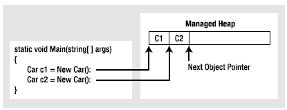

When you are building your C# applications, you are correct to assume that the .NET runtime environment will take care of the managed heap without your direct intervention. In fact, the golden rule of .NET memory management is simple:
Rule Allocate a class instance onto the managed heap using the new keyword and forget about it.
Once instantiated, the garbage collector will destroy an object when it is no longer needed. The next obvious question, of course, is, “How does the garbage collector determine when an object is no longer needed?” The short (i.e., incomplete) answer is that the garbage collector removes an object from the heap when it is unreachable by any part of your code base. Assume you have a method in your Program class that allocates a local Car object:
static void MakeACar() { // If myCar is the only reference to the Car object, // it *may* be destroyed when this method returns. Car myCar = new Car(); }
Notice that this Car reference (myCar) has been created directly within the MakeACar() method and has not been passed outside of the defining scope (via a return value or ref/out parameters). Thus, once this method call completes, the myCar reference is no longer reachable, and the associated Car object is now a candidate for garbage collection. Understand, however, that you can’t guarantee that this object will be reclaimed from memory immediately after MakeACar() has completed. All you can assume at this point is that when the CLR performs the next garbage collection, the myCar object could be safely destroyed.
As you will most certainly discover, programming in a garbage-collected environment greatly simplifies your application development. In stark contrast, C++ programmers are painfully aware that if they fail to manually delete heap-allocated objects, memory leaks are never far behind. In fact, tracking down memory leaks is one of the most time-consuming (and tedious) aspects of programming in unmanaged environments. By allowing the garbage collector to take charge of destroying objects, the burden of memory management has been lifted from your shoulders and placed onto those of the CLR.
Note If you happen to have a background in COM development, note that .NET objects do not maintain an internal reference counter, and therefore managed objects do not expose methods such as AddRef() or Release().
When the C# compiler encounters the new keyword, it emits a CIL newobj instruction into the method implementation. If you compile the current example code and investigate the resulting assembly using ildasm.exe, you’d find the following CIL statements within the MakeACar() method:
.method private hidebysig static void MakeACar() cil managed
{
// Code size 8 (0x8)
.maxstack 1
.locals init ([0] class SimpleGC.Car myCar)
IL_0000: nop
IL_0001: newobj instance void SimpleGC.Car::.ctor()
IL_0006: stloc.0
IL_0007: ret
} // end of method Program::MakeACar
Before we examine the exact rules that determine when an object is removed from the managed heap, let’s check out the role of the CIL newobj instruction in a bit more detail. First, understand that the managed heap is more than just a random chunk of memory accessed by the CLR. The .NET garbage collector is quite a tidy housekeeper of the heap, given that it will compact empty blocks of memory (when necessary) for purposes of optimization. To aid in this endeavor, the managed heap maintains a pointer (commonly referred to as the next object pointer or new object pointer) that identifies exactly where the next object will be located.
That said, the newobj instruction tells the CLR to perform the following core operations:
The basic process is illustrated in Figure 8-2.
Figure 8-2 The details of allocating objects onto the managed heap
As your application is busy allocating objects, the space on the managed heap may eventually become full. When processing the newobj instruction, if the CLR determines that the managed heap does not have sufficient memory to allocate the requested type, it will perform a garbage collection in an attempt to free up memory. Thus, the next rule of garbage collection is also quite simple:
Rule If the managed heap does not have sufficient memory to allocate a requested object, a garbage collection will occur.
Exactly how this garbage collection occurs, however, depends on which version of the .NET platform your application is running under. You’ll look at the differences a bit later in this chapter.
Those of you who created COM objects using Visual Basic 6.0 know that it was always preferable to set their references to Nothing when you were finished using them. Under the covers, the reference count of the COM object was decremented by one, and the object could be removed from memory if its reference count equaled 0. In a similar fashion, C/C++ programmers often set pointer variables to null to ensure they are no longer referencing unmanaged memory.
Given these facts, you might wonder what the end result is of assigning object references to null under C#. For example, assume the MakeACar() subroutine has now been updated as follows:
static void MakeACar() { Car myCar = new Car(); myCar = null; }
When you assign object references to null, the compiler generates CIL code that ensures the reference (myCar in this example) no longer points to any object. If you once again made use of ildasm.exe to view the CIL code of the modified MakeACar(), you would find the ldnull opcode (which pushes a null value on the virtual execution stack) followed by a stloc.0 opcode (which sets the null reference on the variable):
.method private hidebysig static void MakeACar() cil managed
{
// Code size 10 (0xa)
.maxstack 1
.locals init ([0] class SimpleGC.Car myCar)
IL_0000: nop
IL_0001: newobj instance void SimpleGC.Car::.ctor()
IL_0006: stloc.0
IL_0007: ldnull
IL_0008: stloc.0
IL_0009: ret
} // end of method Program::MakeACar
What you must understand, however, is that assigning a reference to null does not in any way force the garbage collector to fire up at that exact moment and remove the object from the heap. The only thing you have accomplished is explicitly clipping the connection between the reference and the object it previously pointed to. Given this point, setting references to null under C# is far less consequential than doing so in other C-based languages (or VB 6.0); however, doing so will certainly not cause any harm.